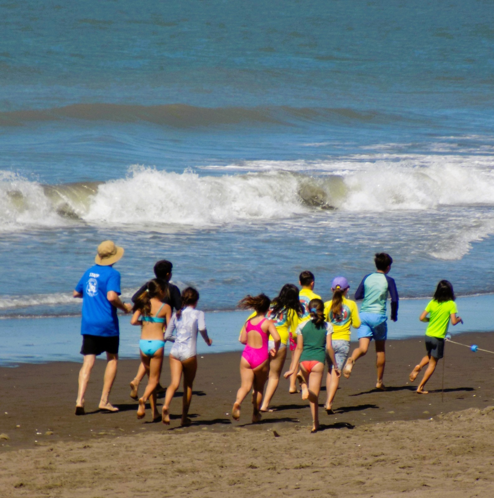

Asociación Civil Escuela de Mar Monte Hermoso
UNA NUEVA ETAPA. EL MISMO PROPÓSITO.
Una institución nacida del mar, la educación y la comunidad.
CRECIMOS. NUESTRO PROYECTO TAMBIÉN.
Escuela de Mar nació en 2018 y tuvo su primera temporada en enero de 2019. La articulación educativa, las capacitaciones, la prevención, el ambiente, el Salvamento Deportivo y el trabajo durante todo el año nos llevaron a constituirnos como Asociación Civil.
¿POR QUÉ UNA ASOCIACIÓN?
Para darle estructura institucional a algo que venimos construyendo desde hace años, proyectarnos más allá de cada temporada, generar programas, fortalecer vínculos y construir proyectos con continuidad.
Nuestro propósito
CONTRIBUIR A CONSTRUIR UNA CULTURA DEL CUIDADO.
Educación, prevención, deporte y comunidad para desarrollar una relación más consciente con el mar, con los demás y con el ambiente.
¿QUÉ HACEMOS?
Educación
Experiencias de aprendizaje en el mar y la naturaleza.
Prevención
RCP, Cadena de Sobrevida y seguridad acuática.
Deporte
Salvamento Deportivo en Monte Hermoso.
Ambiente + comunidad
Conocimiento, respeto, cuidado y vínculos.
CREEMOS EN HACER CON OTROS.
Instituciones educativas · clubes · organizaciones sociales y deportivas · universidades · profesionales · organismos públicos · empresas · comunidad.
Programa de Becas
HACER POSIBLE QUE MÁS CHICOS Y CHICAS PUEDAN SER PARTE.
Desde hace tres años, Escuela de Mar desarrolla un Programa de Becas destinado a chicos y chicas de Monte Hermoso.
Es posible gracias al acompañamiento de comercios, emprendedores y personas de nuestra comunidad que colaboran para que más chicos y chicas puedan vivir la experiencia de Escuela de Mar.
UNA COMUNIDAD QUE HACE POSIBLE.
de Programa de Becas
chicos y chicas de nuestra comunidad
comercios, emprendedores y personas que acompañan
ACOMPAÑAR A ESCUELA DE MAR
Equipamiento deportivo · materiales · capacitaciones · traslados · indumentaria · becas · proyectos · actividades educativas · competencias · acciones ambientales.
Quiero acompañar un proyecto →